00이 매뉴얼에 대하여
RTS-MANMIN은 ASHRAE RTS법(Radiant Time Series)으로 건축물 냉·난방 부하를 실별·장비별·건물별로 산정하고 A4 산출서와 Excel로 출력하는 웹 계산도구입니다. 이 매뉴얼은 처음 쓰는 설비·건축 기술자가 화면 순서대로 따라 하며 결과를 읽고 검토할 수 있도록 작성했습니다.
| 항목 | 내용 |
|---|---|
| 대상 프로그램 | RTS-MANMIN Ver-5.2.1 (2026-10-08 배포) — 앱 헤더 「📘 매뉴얼」 버튼으로 이 문서가 열립니다 |
| 접속 주소 | manminkim-eng.github.io/Radiant-Time-Series-Method |
| 매뉴얼 판 | Ver-5.2.1 (프로그램과 같은 판 번호, 초판) · 2026-10-08 · 작성 김만민 건축사(㈜대성건축사사무소) |
| 내려받기 | PDF(A4) · RTS-MANMIN 열기 |
| 예제 파일 | manual_example_6rooms.rts — 본문 그림은 모두 이 파일로 캡처 · sample_2rooms.rts(회귀 시험용 2실) |
| 읽는 순서 | 처음이면 1장 → 2장(따라하기) → 필요할 때 3장(탭별 상세). 결과 검토·보고서 작성은 4장(기술기준)·5장(작업 방법) |
p-sf처럼 화면 요소 ID를 함께 적었습니다.01RTS-MANMIN 한눈에 보기
설치 없이 브라우저에서 바로 실행되는 단일 페이지 앱(PWA)입니다. 입력은 모두 내 PC 브라우저 안에서 처리되며 서버로 전송되지 않습니다.
무엇을 계산하나
실별 24시간 냉방 현열·잠열, 난방부하, 장비(AHU·FCU)별 동시 피크·코일부하·급기량, 건물 동시 피크
계산 방법
ASHRAE Fundamentals 18장 RTS법 — Sol-Air·CTS 전도, Solar/Non-solar RTS 복사 시간지연
국내 기준 연계
에너지절약설계기준(고시 제2026-360호) 별표7 설계 외기조건 17개 도시, 별표1 열관류율 기준 대조
출력
A4 산출서(표지~Ⅶ·부록)·PDF, Excel 9개 시트, 프로젝트 파일 .rts
1-1. 화면 구성
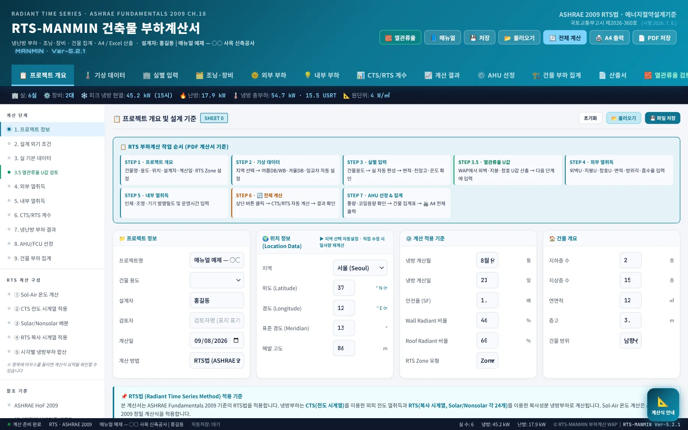
1234- 1헤더 버튼: 저장·불러오기·전체 계산·출력
- 2작업 탭 12개: 왼쪽에서 오른쪽 순서가 작업 순서
- 3요약 스트립: 실 수·장비 수·피크 냉방·난방·총부하·원단위가 계산 때마다 갱신
- 4계산 단계 메뉴: 탭과 같은 곳으로 이동, 아래쪽은 RTS 계산 구성 설명
| 탭 | 하는 일 | 본문 |
|---|---|---|
| 📋 프로젝트 개요 | 건물명·용도·위치(위도·경도)·계산월일·안전율 | 3-1 |
| 🌡️ 기상 데이터 | 냉·난방 설계 외기온·습도, 일교차, 실내조건, Sol-Air 표 | 3-2 |
| 🏢 실별 입력 | 실 목록 그리드, 실 상세(내부발열·유리·외벽/지붕) | 3-3·3-4 |
| 🗂️ 조닝·장비 | 존·장비 등록, 실 배정, 외기량, 장비별 집계 | 3-6 |
| 🌞 외부 부하 / 💡 내부 부하 | 실 데이터 합산 결과 확인(실이 없을 때만 직접 입력) | 3-7 |
| 📊 CTS/RTS 계수 | 적용 중인 계수표 확인 | 3-8 |
| 📈 계산 결과 | 시각별 냉방부하 차트·표, 항목별 분석, 실별 결과 | 3-9 |
| ⚙️ AHU 선정 / 🏗️ 건물 부하 집계 | 급기량·팬 동력 간이 산정, 건물 집계 | 3-10 |
| 📄 산출서 | A4 계산서 조립·미리보기·PDF | 3-11 |
| 🧱 열관류율 | 열관류율 WAP 결과 연계(U값 일괄 적용) | 3-7 |
1-2. 헤더 버튼
- 1저장 — 현재 입력 전체를 .rts 파일로 내려받기
- 2불러오기 — .rts 파일을 열어 이어서 작업
- 3전체 계산 — 입력 검증 후 모든 부하 재계산
- 4A4 출력 — 산출서 인쇄
- 5PDF 저장 — 파일명 RTS_부하계산서_{프로젝트}_{날짜}
- 6열관류율 — 열관류율 종합검토 WAP 새 창
- 7매뉴얼 — 이 사용자 매뉴얼을 새 창으로 열기(Ver-5.2.1 신설, 인터넷 연결 필요)
1-3. 설치·저장·불러오기
- 앱 설치(PWA) — Edge·Chrome 주소창 오른쪽의 설치 아이콘 또는 헤더 「📲 설치」. 설치 후에는 오프라인에서도 실행됩니다.
- 업데이트 — 새 버전이 배포되면 앱을 한 번 닫았다 열거나 Ctrl+F5. 헤더의 버전 표기(예:
MANMIN · Ver-5.2.1)로 확인합니다. - 저장 파일(.rts) — JSON 형식. 이전 판(스키마 4·5)에서 저장한 파일도 그대로 열립니다. 새 항목(θ별 SHGC·IAC 등)은 비어 있는 상태로 열리며 이전과 같은 결과를 냅니다.
- 매뉴얼 — 헤더 「📘 매뉴얼」 버튼을 누르면 이 문서가 새 창으로 열립니다. 주소: manminkim-eng.github.io/Radiant-Time-Series-Method/manual/ — 매뉴얼은 오프라인 저장 대상이 아니어서 인터넷이 끊기면 열리지 않는다는 안내만 표시됩니다.
- 자동 저장 없음 — 작업 중간중간 「💾 저장」을 눌러 파일로 보관하십시오. 브라우저 기록 삭제 시 화면 입력은 사라집니다.
0210분 따라하기
예제 파일(6실·장비 2대)을 열어 계산하고 산출서까지 뽑아 봅니다. 새 프로젝트도 같은 순서로 입력합니다.
- 예제 파일 열기매뉴얼 폴더의
sample/manual_example_6rooms.rts를 「📂 불러오기」로 엽니다. 요약 스트립에 「실 6실 · 장비 2대」가 표시되면 정상입니다. - 프로젝트 개요 확인지역(도시)을 고르면 위도·경도·설계 외기조건이 자동 입력됩니다. 냉방 계산월·일(기본 8월 21일)과 안전율(SF 1.10)을 확인합니다. → 3-1
- 기상 데이터 확인냉방 건구·습구온도, 일교차, 난방 외기온, 실내 설정조건을 확인합니다. 지역 선택값은 별표7 원문 값입니다. → 3-2
- 실 입력실별 입력 탭에서 실 번호·면적·천장고·용도·인원밀도·조명/기기 밀도·침기·장비 번호를 입력하고, 각 행의 「▶ 상세」에서 유리창·외벽/지붕을 방위별로 넣습니다. → 3-3
- 장비 배정조닝·장비 탭에서 공조기를 등록하고 실을 배정합니다. 외기량은 인원·면적·직접 3가지 방식 중 선택합니다. → 3-6
- 전체 계산헤더 「🔄 전체 계산」. 입력 검증 창에 누락·이상치가 나오면 확인 후 계속합니다. 예제의 결과는 건물 냉방 현열 45,166 W(15시), 잠열 13,843 W, 난방 17,864 W입니다.
- 결과 검토계산 결과 탭에서 시각별 차트와 항목별 분석을 보고, 「✔ 검증 · 항목 합계 = 피크 현열」 표시를 확인합니다. → 3-9
- 산출서·저장산출서 탭에서 A4 미리보기를 확인하고 「📄 PDF 저장」, 마지막으로 「💾 저장」으로 .rts를 보관합니다. → 3-11
03탭별 기능 상세
각 탭의 입력란과 버튼, 계산에 쓰이는 방식을 화면 순서대로 설명합니다.
3-1. 프로젝트 개요
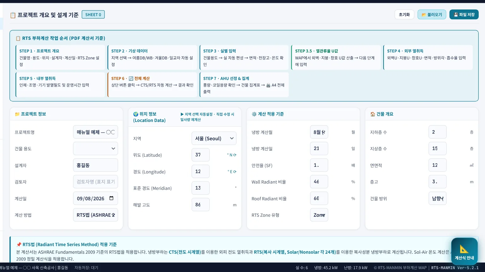
12345- 1프로젝트명·용도·설계자 — 산출서 표지와 머리말에 표시
- 2지역 — 선택 시 위도·경도·표고와 별표7 설계 외기조건 자동 입력
- 3위도·경도·표준경도·표고 — 태양 위치 계산에 직접 사용
- 4냉방 계산월·일 — 이 날짜의 태양 위치로 일사 계산
- 5안전율(SF) — 표시·산출서 기준값(실별 SF가 계산에 우선)
3-2. 기상 데이터
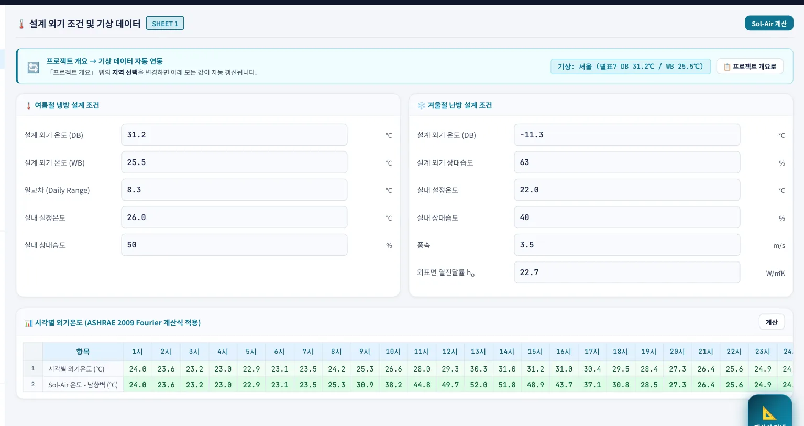
123456- 1냉방 설계 건구온도(℃)
- 2냉방 설계 습구온도(℃)
- 3일교차(℃) — 시각별 외기온 곡선의 진폭
- 4난방 설계 외기온(℃)
- 5실내 냉방 설정온도(℃)
- 6외표면 열전달률 ho(W/㎡K, Ver-5.2.0 신설) — Sol-Air 계산용
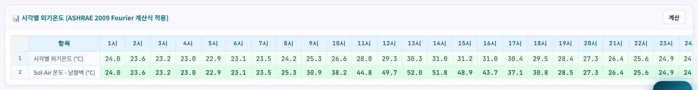
시각별 외기온은 최고온도와 일교차로 만든 24시간 곡선입니다. 표의 Sol-Air는 남향 수직면 대표값이며, 실제 계산은 부위별 방위·경사·흡수율로 따로 구합니다(4-3).
3-3. 실별 입력
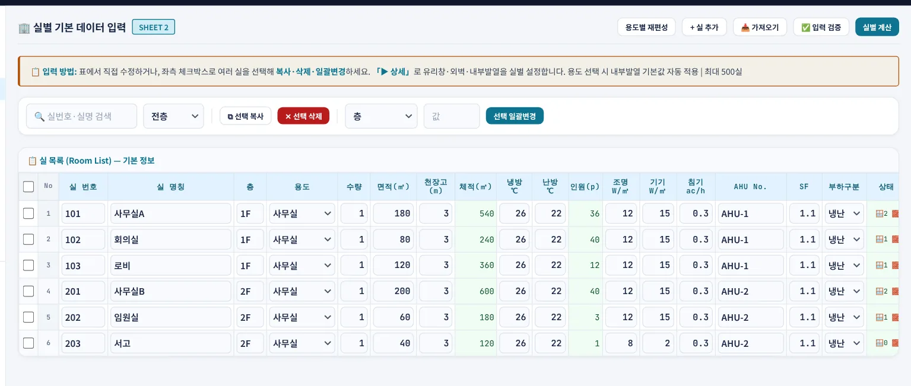
123- 1+ 실 추가
- 2📥 가져오기 — CSV/XLSX 템플릿 일괄 입력
- 3실 목록 — 표에서 바로 수정, 체크 후 복사·삭제·일괄변경
| 열 | 의미 | 기본값 |
|---|---|---|
| 실 번호·실명·층 | 식별·산출서 표기 | — |
| 면적(㎡)·수량 | 수량은 같은 실의 개수(면적×수량으로 합산) | — |
| 천장고(m) | 체적 = 면적×천장고 → 침기량 산정 | 2.7 |
| 냉방·난방 ℃ | 실별 설정온도 — 계산에 우선 적용 | 26 / 22 |
| 인원(p) | 면적 × 인원밀도(상세 탭) | 0.2 인/㎡ |
| 조명·기기 W/㎡ | 발열 밀도 | 12 / 15 |
| 침기 ac/h | 시간당 환기횟수(냉·난방 공통, Ver-5.3.0에서 분리 예정) | 0.1 |
| AHU No. | 배정 장비 번호(조닝 탭과 연동) | — |
| SF | 실별 안전율 — 건물 집계에도 실별 값이 적용 | 1.10 |
3-4. 실 상세 모달 (▶ 상세)
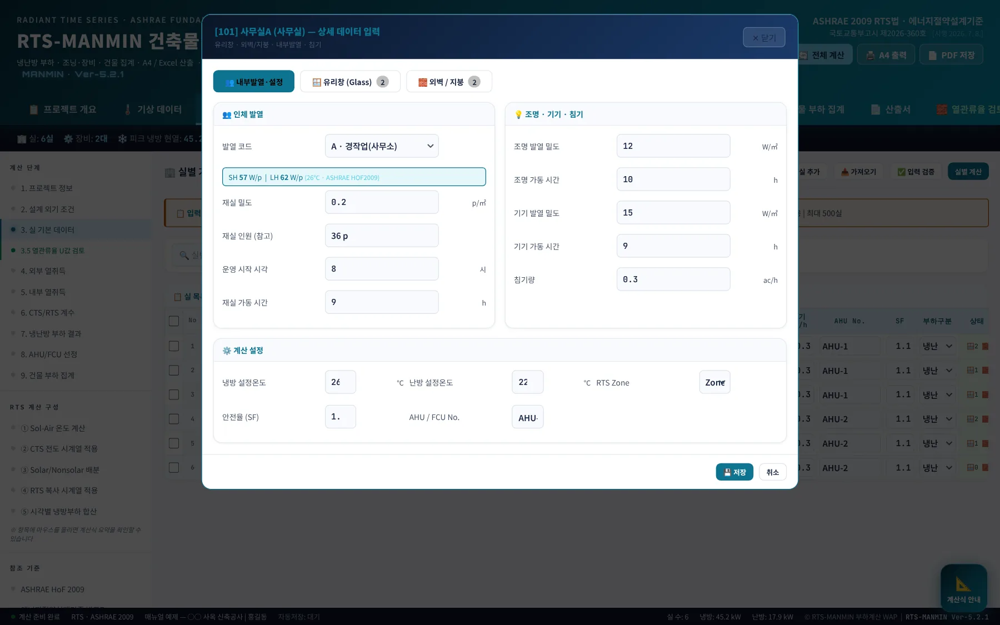
12- 1실별 안전율
- 2RTS Zone(현재 참고값)
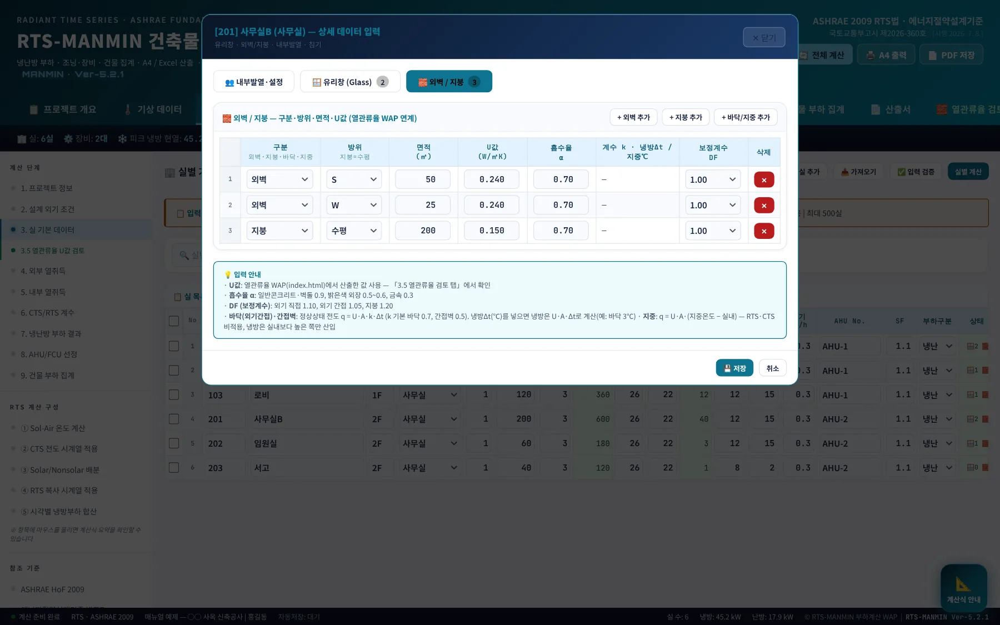
123- 1+ 외벽 추가
- 2+ 지붕 추가 — 방위는 「수평」
- 3+ 바닥/지중 — 정상상태 전도 부위
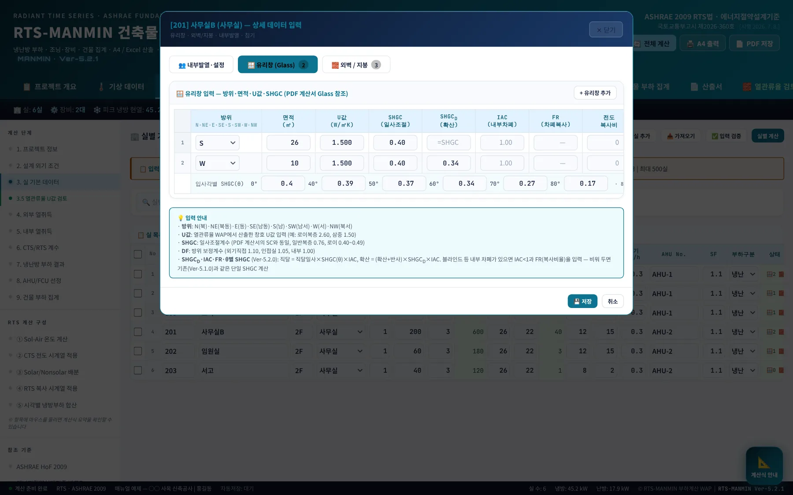
12- 1+ 유리창 추가
- 2「θ」 버튼 → 입사각별 SHGC 6점 입력 행
| 입력 | 의미 | 구분 |
|---|---|---|
| 방위 | N·NE·E·SE·S·SW·W·NW (북 0°·동 90°·남 180°·서 270°) | 필수 |
| 면적·U값 | 창 면적(㎡), 창호 열관류율(W/㎡K) | 필수 |
| SHGC | 태양열취득률(수직 입사) — 다른 값이 비어 있으면 이 값 하나로 계산 | 필수 |
| SHGCD | 확산 일사용 SHGC. 비우면 SHGC | 선택 |
| IAC | 내부 차폐(블라인드·롤스크린) 감쇠계수. 없으면 1.0(비움) | 선택 |
| FR | 차폐 시 일사의 복사비율. IAC<1일 때만 사용, 비우면 1.0 + 입력 검증 경고 | IAC 입력 시 |
| 전도 복사비 | 창호 전도열의 복사비율. 비우면 0(전량 즉시 부하) | 선택 |
| θ별 SHGC | 0·40·50·60·70·80° 6점. 비우면 단일 SHGC(80~90°도 감쇠 없음) | 선택 |
| DF | 방위 보정계수(난방 손실용). 현재 냉방 일사에도 곱해짐 — Ver-5.3.0에서 난방 전용으로 변경 예정 | 1.05 |
외벽/지붕 탭의 흡수율 α는 Ver-5.2.0부터 실제 계산에 반영됩니다(이전 판은 0.9 고정). 밝은 외장재는 0.5~0.6, 일반 콘크리트·어두운 외장은 0.9를 씁니다. 지붕은 방위와 관계없이 수평면 일사로 계산합니다.
3-5. CSV 가져오기 · 입력 검증
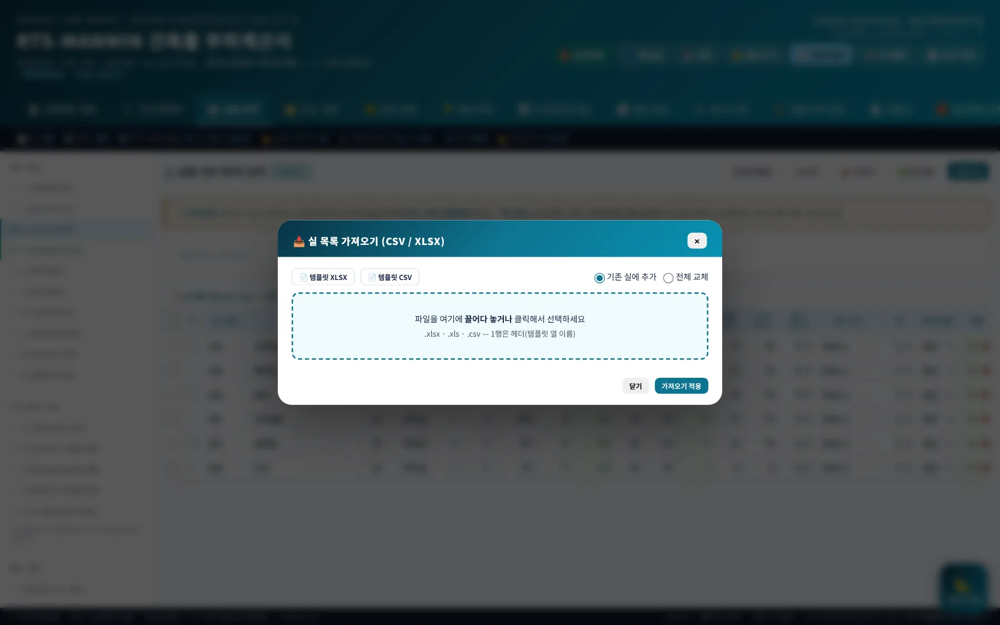
가져오기 템플릿은 46열(기본 15열 + 외피 1~4 × 7열 + 지붕·비고)입니다. 벽 면적은 「길이×높이×(1−창면적비)」, 유리는 「길이×높이×창면적비」로 자동 산정됩니다. 입력 검증은 누락·이상치(조명 > 50, 기기 > 100 W/㎡, 재실 > 0.6 인/㎡, 침기 > 2 ACH, 외피 면적 과다, 지역 U값 기준 초과)·장비 미배정·외기량 0을 점검하며 계산을 막지는 않습니다. 같은 내용이 산출서 Ⅲ장 각주에 남습니다.
3-6. 조닝·장비
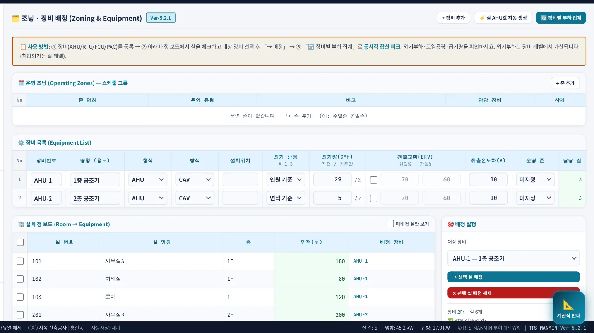
1- 1장비 추가
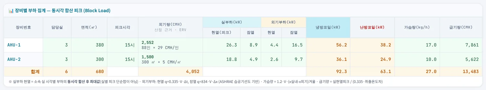
| 항목 | 산정 방식 |
|---|---|
| 동시 피크 | 배정된 실들의 시각별 현열을 더한 뒤 최대값(실별 피크의 단순 합보다 작거나 같음) |
| 외기량 | 인원(Σ인원×CMH/인, 기본 29) · 면적(Σ면적×CMH/㎡, 기본 5) · 직접 입력 중 선택 |
| ERV | 전열교환기 효율(현열·잠열 %) 입력 시 외기부하에서 감산 |
| 냉방 코일 | 실 현열 피크 + 실 잠열 + 외기 현열 + 외기 잠열 |
| 난방 코일 | 실 난방 + 외기 난방 |
| 급기량 | 현열 피크 ÷ (0.335 × 취출온도차) [CMH] |
3-7. 외부 부하 · 내부 부하 탭
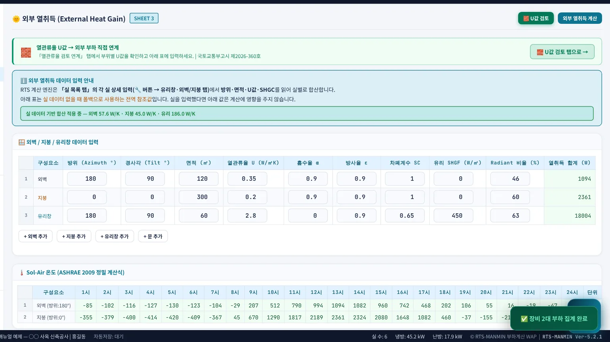
1- 1실 데이터 기반 합산 안내
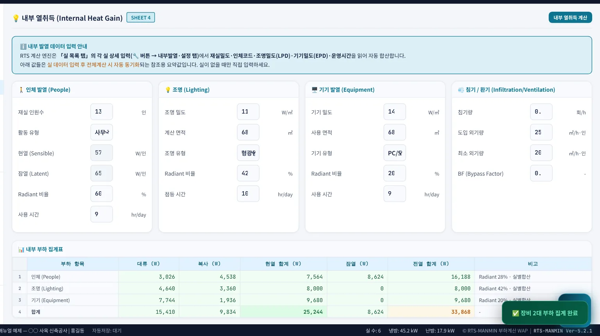
실별 입력이 있으면 계산은 실 데이터만 씁니다. 두 탭의 입력란은 실을 하나도 만들지 않은 간이 계산(건물 한 덩어리) 용도입니다. 「🧱 열관류율」 탭에서는 열관류율 WAP 결과를 불러와 실 외피에 U값을 일괄 적용할 수 있습니다.
3-8. CTS/RTS 계수
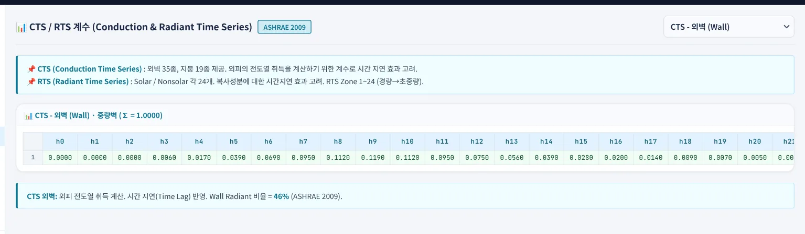
3-9. 계산 결과
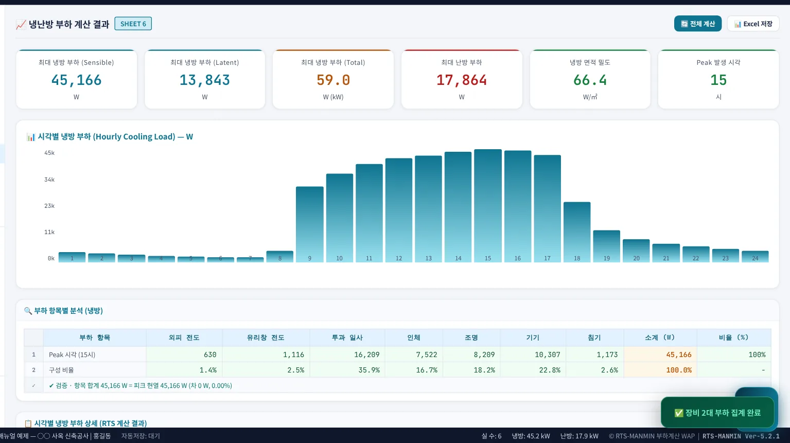
123- 1시각별 냉방부하 차트(1~24시)
- 2부하 항목별 분석 — 피크 시각의 7개 항목과 자체 검증
- 3시각별 부하표(항목 × 24시간)
예제의 피크 15시 항목별 값(SF 포함)은 다음과 같습니다. 「✔ 검증」 줄은 항목 합계와 피크 현열이 일치하는지 프로그램이 스스로 확인한 결과입니다.
| 항목 | W |
|---|---|
| 외피 전도 | 630 |
| 유리 전도 | 1,116 |
| 투과 일사 | 16,209 |
| 인체 | 7,522 |
| 조명 | 8,209 |
| 기기 | 10,307 |
| 침기 | 1,173 |
| 합계 = 피크 현열 | 45,166 |
3-10. AHU 선정 · 건물 부하 집계
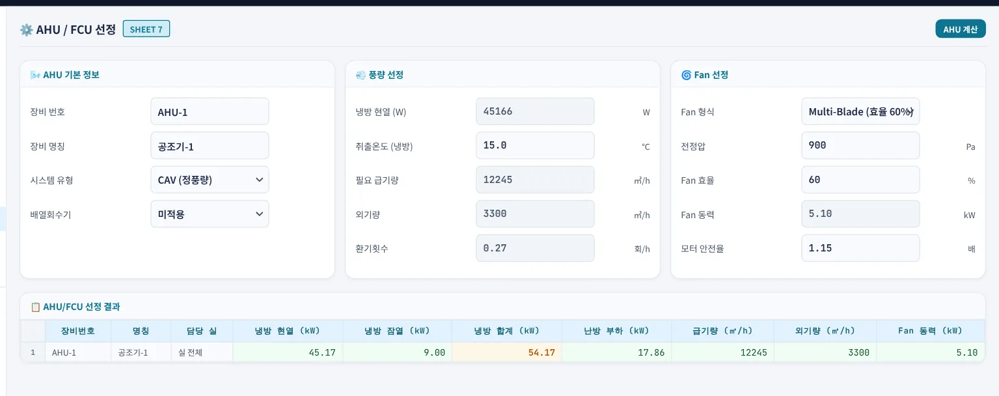
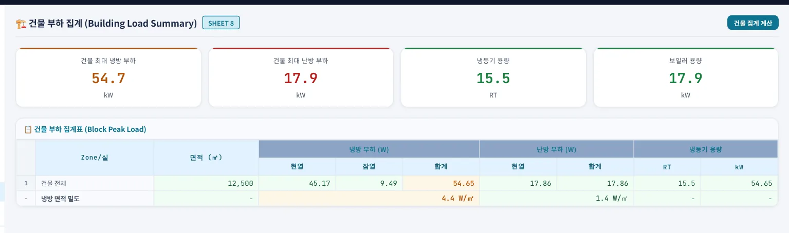
3-11. 산출서 · 출력
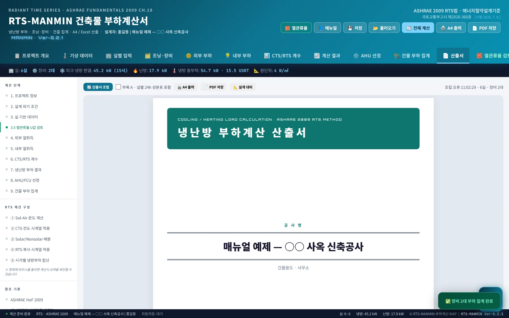
12- 1조립 상태(시각·실 수·장비 수)
- 2A4 미리보기(표지·목차·Ⅰ~Ⅶ·부록)
| 장 | 내용 |
|---|---|
| Ⅰ 계산조건 | 지역·외기·실내조건·계수·근거 고시 |
| Ⅱ 실별 입력 | 실 목록과 외피 요약 |
| Ⅲ 결과 요약 | 층별·장비별 소계, 원단위 판정, 입력 검증 각주 |
| Ⅳ 실별 상세 | 실별 결과표와 계산 과정(2실/쪽) |
| Ⅴ 장비별 | 장비별 동시 피크·코일·급기량·외기량 |
| Ⅵ 건물 집계 | 동시 피크·항목 분해·열원 용량 기준 |
| Ⅶ 설계 대비 | 설계값 입력 시 비율·차이 판정 |
| 부록 A | 실별 24시간 부하(선택) |
Excel 내보내기는 9개 시트(표지·설계기준·외부열취득·내부열취득·RTS계산결과·실별부하·부하집계·AHU선정·조닝장비집계)로 만들어지며, Ver-5.2.0부터 화면 값과 같은 숫자가 나옵니다. 「계산식 안내」 단추(화면 오른쪽 아래)를 누르면 탭별 계산식 요약을 볼 수 있습니다.
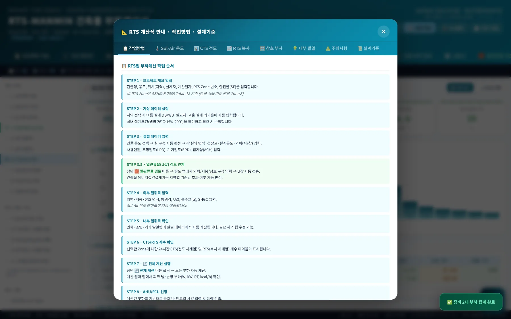
3-12. 모바일
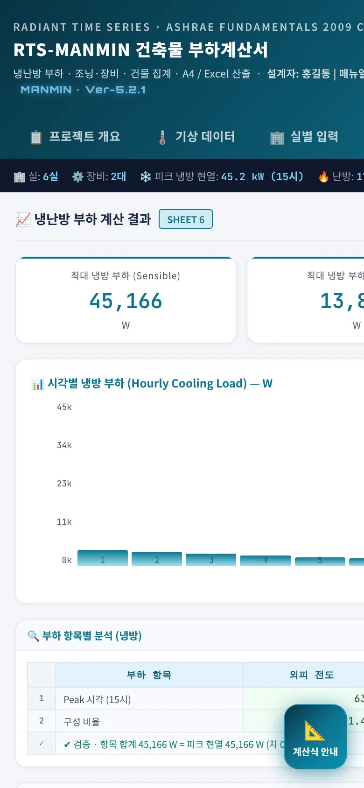
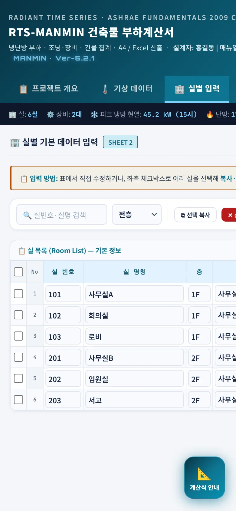
폭 768px 이하에서는 하단 상태바가 숨겨지고, 넓은 표는 화면 전체가 좌우로 스크롤됩니다. 현장 확인·결과 조회는 휴대전화로, 실 입력은 PC에서 하는 것을 권장합니다.
04기술기준 해설
RTS-MANMIN이 쓰는 계산식과 근거입니다. 방법론은 ASHRAE Handbook—Fundamentals 18장(Nonresidential Cooling and Heating Load Calculations)의 RTS법을 따르며, 국내 법령은 설계 외기조건·열관류율 기준에 적용합니다.
4-1. RTS법 원리
RTS법은 각 부위의 열취득(heat gain)을 시각별로 구한 뒤, 복사분은 실 구조체에 일단 흡수됐다가 시간이 지나 방출되므로 RTS 계수(24개, 합 1.0)로 늦춰서 냉방부하로 바꾸고, 대류분과 침기는 그 시각에 바로 냉방부하가 된다고 봅니다.
4-2. 태양 위치와 일사
적위·균시차·시간각으로 태양고도와 방위각을 구하고, 면의 방위·경사와의 입사각 θ로 면 일사를 계산합니다. 일사는 직달·확산·지면반사로 나눠 다룹니다(Ver-5.2.0). 현재 일사 모델은 간이 투과율식(확산 = 수평면 직달의 20%, 등방성, 지면반사율 0.2)이며, ASHRAE clear-sky 모델(τb·τd)은 계수식과 지역 τ값 확인 후 추가할 예정입니다.
4-3. 상당외기온도(Sol-Air)
Ver-5.2.0부터 외벽은 각 방위의 수직면 일사, 지붕은 수평면 일사로 따로 계산합니다(이전 판은 모든 부위에 남향 수직 1종). ASHRAE는 α/ho를 어두운 색 0.052, 밝은 색 0.026 m²K/W로 제시하며 이는 ho ≈ 17 W/㎡K에 해당합니다. 기본값 22.7은 이전 판과 결과를 맞추기 위한 값이므로, 설계 조건에 맞게 조정해 쓰십시오.
4-4. 외벽·지붕 전도 (CTS)
바닥(외기 간접)·간벽(비공조실)·지중은 정상상태 전도(q = U·A·k·Δt 또는 U·A·냉방Δt)로 24시간 균등하게 더하며 RTS·CTS를 적용하지 않습니다.
4-5. 유리 일사·전도
SHGC(θ)는 0·40·50·60·70·80° 값을 선형 보간하고 80~90°에서 0으로 줄입니다. 6점을 넣지 않으면 단일 SHGC를 모든 입사각에 씁니다.
4-6. 내부발열·침기
| 항목 | 복사 | 대류 | 산정 |
|---|---|---|---|
| 인체 현열 | 60% | 40% | 재실 스케줄 × 인원 × 활동별 현열(코드 A~I, 실내온도별) |
| 인체 잠열 | — | 100% 즉시 | 인원 × 활동별 잠열 |
| 조명 | 42% | 58% | LPD × 면적 × 스케줄 |
| 기기 | 20% | 80% | EPD × 면적 × 스케줄 |
| 침기 현열 | — | 100% 즉시 | 0.335 × V × ACH × (to − ti), 현재 피크 Δt로 24h 일정 |
| 침기 잠열 | — | 100% 즉시 | 834 × V × ACH × Δx (외기 DB/WB − 실내 DB/RH) |
조명·기기의 W/㎡는 실제 설치 전력을 넣습니다. LED 조명은 정격전력에 드라이버 손실이 이미 들어 있으므로 별도 안정기 계수를 곱하지 않습니다.
4-7. 안전율과 동시부하
- 안전율(SF) — 실별 SF를 그 실의 현열·잠열에 곱합니다. 난방은 외피 전도에 SF를 곱하고 침기에는 곱하지 않습니다(Ver-5.3.0에서 선택 옵션 예정).
- 실별 피크 합 vs 동시 피크 — 실마다 피크 시각이 다르므로 Σ실별 피크(예제 47,566 W)는 건물 동시 피크(45,166 W)보다 큽니다. 실 단말(FCU) 용량은 실별 피크로, 공조기·열원은 동시 피크로 정합니다. 산출서 Ⅵ에 「실별 피크 합 ÷ 동시 피크」 비율이 표시됩니다.
4-8. 국내 기준
| 법령 | 고시 번호 | 시행일 | 적용 내용 |
|---|---|---|---|
| 건축물의 에너지절약설계기준 | 국토교통부고시 제2026-360호 | 2026. 7. 8. | 제8조제1호 설계용 외기조건 — 위험률 2.5%(냉·난방기 분리) 또는 1%(연간), 또는 별표7 외기온·습도. 별표7 외 지역은 가장 유사한 기후 지역 값 |
| 〃 | 〃 | 〃 | 제9조제1호(권장) 설계 실내온도 — 난방 20℃, 냉방 28℃ 기준, 용도·실 특성에 따라 별표8 범위 참고 |
| 〃 | 〃 | 〃 | 별표1 지역별 건축물 부위의 열관류율표 — 입력 검증의 U값 상한 판정 |
확인위 조항·고시 번호·시행일은 국가법령정보(LawMCP)로 2026-10-08 원문 조회해 확인했습니다. 프로그램의 실내 냉방 기본값 26℃는 제9조제1호 권장 기준(28℃)과 다르므로, 설계 조건에 맞게 실별로 지정하십시오.
05실무 작업 방법
5-1. 설계 단계별 절차
| 단계 | 작업 | 산출·확인 |
|---|---|---|
| 기획·계획설계 | 건물 1덩어리 또는 층별 대표실로 간이 계산 → 원단위(W/㎡) 확인 | 외부·내부 부하 탭 직접 입력 또는 층별 실 몇 개 |
| 기본설계 | 실 목록 CSV 가져오기 → 외피(방위별 벽·유리·지붕) 입력 → 장비 조닝 | 입력 검증 경고 0 목표, 장비 미배정 0 |
| 실시설계 | 창호 성능서 SHGC(θ)·차폐 IAC 반영, 장비별 외기량·ERV 확정 | 산출서 PDF + Excel + .rts 함께 납품 |
| 설계변경·VE | .rts를 복사해 대안별 파일로 계산 → Ⅶ 설계 대비 시트로 비교 | 변경 전·후 항목별 편차표 첨부 |
공사명_안(A·B)_냉방_YYYYMMDD.rts처럼 안·조건을 파일명에 넣어 두면 검토·대조가 쉽습니다. 냉방과 난방의 침기횟수가 다르면 현재는 파일을 둘로 나눠 계산합니다(Ver-5.3.0에서 통합 예정).5-2. 다른 프로그램 계산서와 대조할 때
- 같은 입력(실 면적·외피·발열·스케줄·외기조건)으로 맞춘 .rts를 만든다.
- 건물 동시 피크를 항목별(유리·지붕·외벽·간벽·인체·조명·기기·침기 현열/잠열)로 나란히 놓는다.
- 편차가 큰 항목부터 원인을 찾는다 — 일사 모델·Sol-Air·CTS/RTS 계수·SHGC/차폐·안전율 적용 범위·조명 안정기/환기 분담 순서.
- 피크 시각이 다르면 같은 시각 값도 함께 비교한다.
5-3. 검증 사례 — 하림 익산공장 증축 (RTS-SAREK 3.6 대조)
118실·12,752.64㎡, SAREK 입력을 그대로 옮긴 A안(냉방 피크 SAREK 16시)을 판별로 비교했습니다(kW, SF 포함).
| 항목 | SAREK 3.6 | Ver-5.1.0 | Ver-5.2.0 | Ver-5.2.0 + SAREK 유리값 |
|---|---|---|---|---|
| 유리(전도+일사) | 195.0 | 366.8 +88% | 327.0 +68% | 193.9 −1% |
| 지붕 | 10.7 | 18.6 +74% | 23.9 +123% | 23.9 +123% |
| 외벽 | 1.7 | 3.7 +116% | 0.3 −81% | 0.3 −81% |
| 간벽·바닥 | 15.1 | 15.1 0% | 15.1 0% | 15.1 0% |
| 침기 현열 | 51.5 | 59.4 +15% | 59.4 +15% | 59.4 +15% |
| 인체 잠열 | 156.3 | 153.7 −2% | 153.7 −2% | 153.7 −2% |
| 침기 잠열 | 227.0 | 248.8 +10% | 248.8 +10% | 248.8 +10% |
| 냉방 실부하 합계 | 1,242.2 | 1,350.2 +8.7% | 1,312.2 +5.6% | 1,179.1 −5.1% |
| 피크 시각 | 16시 | 15시 | 15시 | 15시 |
| 난방 | 799.5 | 765.4 −4.3% | 765.4 −4.3% | — |
「SAREK 유리값」은 G1 유리의 입사각별 SHGC(0.27/0.26/0.25/0.23/0.18/0.11), 확산 SHGC 0.23, 내부차폐 AC 0.67, 복사비율 0.63을 Ver-5.2.0 입력란에 넣은 결과입니다. 유리 항목 편차가 +88%에서 −1%로 줄어 목표(±20%)를 만족했습니다. 합계 −5.1%는 목표(±5%)를 근소하게 벗어났고, 남은 차이는 지붕(CTS 계수 선택, B-4)·조명(안정기 계수·환기 분담, B-6)·침기(안전율 적용, B-5)로 Ver-5.3.0 대상입니다.
5-4. 회귀 시험 (관리자용)
프로그램을 고친 뒤에는 브라우저 개발자 도구(F12) 콘솔에서 runRegression()을 실행합니다. 저장소 tests/regression.json의 6개 케이스(샘플 2실·이리신광교회 2건·동향 단일실·지붕 단일실·CTS 손계산)를 ±1%로 대조하며, Ver-5.2.1 기준 6/6 PASS입니다(계산 로직은 Ver-5.2.0과 동일).
06문제 해결 · FAQ
| 증상 | 조치 |
|---|---|
| 새 버전인데 화면이 그대로다 | 설치형 앱은 서비스워커 캐시를 씁니다. 앱을 닫고 다시 열거나 Ctrl+F5. 헤더 버전 표기 확인 |
| 결과가 0 또는 「—」 | 「🔄 전체 계산」을 눌렀는지, 실 면적·발열·외피가 입력됐는지, 입력 검증 리포트의 누락 항목 확인 |
| 동·서향 결과가 이상하다 | Ver-5.1.0 이하로 계산한 결과입니다. Ver-5.2.0에서 태양 방위각 오류(동·서 교차)가 수정됐으니 다시 계산 |
| 북향 유리 일사가 남향만큼 크다 | Ver-5.1.0 이하의 오류(북향 0°가 남향으로 처리)입니다. Ver-5.2.0에서 수정 |
| Excel 버튼을 눌러도 파일이 안 나온다 | Ver-5.1.0의 오류였고 Ver-5.2.0에서 수정. 오프라인 첫 실행이면 Excel 라이브러리가 아직 없을 수 있으니 온라인에서 한 번 실행 |
| 예전 .rts 파일 결과가 달라졌다 | Ver-5.2.0의 계산식 개선(방위·Sol-Air·CTS·유리 일사) 때문입니다. 변경 원인은 부록 A2와 CHANGELOG 참조 |
| IAC를 넣었더니 경고가 뜬다 | 차폐 복사비율 FR을 함께 입력하십시오. 비우면 1.0(전량 복사)으로 계산 |
| 실별 피크 합과 건물 피크가 다르다 | 정상입니다. 건물 피크는 같은 시각의 합(동시부하)입니다(4-7) |
| 외부·내부 부하 탭에서 고친 값이 반영 안 된다 | 실 데이터가 있으면 실 입력만 계산에 씁니다(3-7) |
부록참고 자료
A1. 주요 입력 기본값과 근거
| 항목 | 기본값 | 입력 위치 | 근거·비고 |
|---|---|---|---|
| 안전율 SF | 1.10 | — | 사내 기본값(실별 변경) |
| 실내 냉방 / 난방 | 26 / 22 ℃ | w-indoor-cool / w-indoor-heat | 설계 조건에 맞게 변경. 에너지절약설계기준 제9조제1호 권장 냉방 28·난방 20℃ |
| 외표면 열전달률 ho | 22.7 W/㎡K | p-ho | 이전 판 호환값. ASHRAE α/ho 0.052·0.026 |
| 흡수율 α | 0.9 | wall[].alpha | 외장 색·재료별 입력 |
| 벽·지붕 복사비율 | 0.46 / 0.60 | 고정(Ver-5.3.0 입력화) | ASHRAE 18장 권장값 |
| RTS·CTS 계수 | Zone 8 / 중량 벽·지붕 | 고정(Ver-5.3.0 선택화) | ASHRAE 18장 표 |
| 인체·조명·기기 복사비율 | 0.60 / 0.42 / 0.20 | 고정 | ASHRAE 18장 권장 범위 |
| 인원밀도 | 0.2 인/㎡ | ppl_density | 용도별 |
| 조명 / 기기 | 12 / 15 W/㎡ | lpd / epd | 실 설치 전력 |
| 침기 | 0.1 ac/h | infil_ach | 창호 기밀성·출입빈도 반영 |
| 외기량(인원) | 29 CMH/인 | oaPerPpl | 건축물의 설비기준 등에 관한 규칙 등 해당 용도 기준 확인 후 입력 |
| 취출온도차 | 10 ℃ | supplyDT | 장비별 |
A2. 버전 변경 내역
Ver-5.2.1 (2026-10-08) — 사용자 매뉴얼 연결
| 항목 | 기존 | 변경 |
|---|---|---|
| 매뉴얼 버튼 | — | 헤더 「📘 매뉴얼」 → 이 매뉴얼 새 창(오프라인이면 안내) |
| 사용자 매뉴얼 | — | 웹(manual/)·PDF 공개, 매뉴얼 판 번호를 프로그램 판(Ver-5.2.1)과 통일 |
| 계산 로직 | — | 변경 없음(Ver-5.2.0과 같은 결과) |
Ver-5.2.0 (2026-10-08) — 계산 엔진 보완 1차
| ID | 항목 | 기존 | 변경 |
|---|---|---|---|
| B-1 | 태양 방위각 | 오전 태양이 서측 — 동·서향 일사 교차 | 북 기준 시계방향으로 수정 |
| B-2 | 상당외기온도 | 모든 부위 남향 수직 1종, α 0.9 고정 | 부위별 방위·경사·α, 지붕 수평면, ho 입력 |
| B-3 | 유리 일사 | 총일사 × 단일 SHGC | 직달/확산 분리, SHGC(θ)·SHGC_D·IAC·FR |
| B-13 | CTS 절차 | 대류분 즉시·RTS 누락 | ASHRAE 절차(CTS → 복사분 Non-solar RTS) |
| B-14 | 창호 전도 | 100% 즉시 | 전도 복사비 입력(기본 0) |
| B-11 | 건물 집계 | 별도 중복 계산 | Σ실별 계산(실별 SF·실내온도) |
| B-18 | 북향 유리 | 남향으로 계산 | 북향 일사 |
| B-10·B-19 | Excel | 내보내기 중단 | 정상 생성, 화면 값과 일치 |
| B-16 | 파일 복원 | 이전 프로젝트 값 잔류 | 초기화 후 복원 |
회귀 영향(건물 냉방 현열): 샘플 2실 −2.21%, 이리신광교회 재구성 −2.94%, 원본 −0.43%. 잠열·난방은 변동 없음. 상세는 저장소 CHANGELOG.md.
A3. 용어
| 용어 | 뜻 |
|---|---|
| RTS | Radiant Time Series — 복사 열취득이 냉방부하로 나타나는 시간 분포 계수(24개) |
| CTS | Conduction Time Series — 외벽·지붕 전도 열취득의 시간 분포 계수(24개) |
| Sol-Air(상당외기온도) | 일사·장파 복사 영향을 외기온에 더한 가상 온도 |
| SHGC | 태양열취득률 — 입사 일사 중 실내로 들어오는 비율 |
| IAC | Interior Attenuation Coefficient — 내부 차폐의 일사 감쇠계수 |
| FR | 차폐가 있을 때 일사 열취득 중 복사로 나타나는 비율 |
| 동시 피크 | 여러 실의 같은 시각 부하 합의 최대값 |
| 원단위 | 단위면적당 부하(W/㎡) |